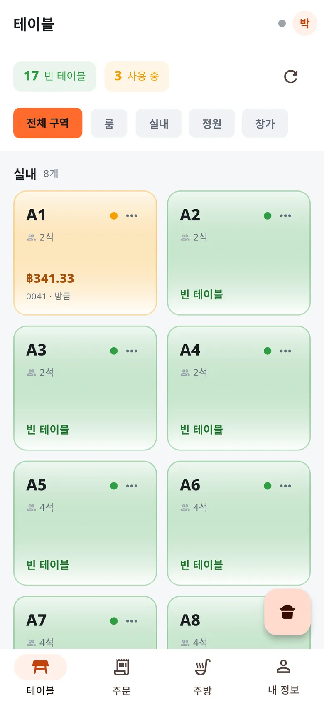

01 피크 타임 세트
주문이 아무리 몰려도 주방은 무엇부터 할지 압니다
가게가 겪는 문제피크 때 직원이 종이 주문서를 들고 주방으로 뛰어갑니다. 주문서는 사라지고 글씨는 알아보기 힘들고, 주방은 손님이 기다린 순서가 아니라 집어 든 순서대로 요리해요. 그래서 가장 오래 기다린 테이블이 잊힙니다.
이 세트에 들어 있는 것
- 색으로 상태를 보여 주는 테이블 배치도빈 테이블, 이용 중, 테이블별 미결제 금액, 실내·창가 구역별 구분.
- 옵션과 메모까지 담은 주문보통 맵기, 계란 프라이 추가, 야채 빼기 — 소리칠 필요 없이 주방에 그대로 전달.
- 실시간 3열 주방 화면조리 대기 → 조리 중 → 서빙 준비. 가장 오래된 주문이 맨 위, 15분을 넘기면 자동으로 빨간 경고.
- 매장·포장·배달을 아이콘으로 구분포장 주문에는 하루 단위 대기번호가 자동으로 붙어요.
- 잘못 누른 건 되돌리기상태를 바꾼 뒤 8초 동안 "실행 취소" 바가 떠요. 매니저를 부를 필요가 없습니다.
✓ 가장 오래 기다린 요리가 늘 맨 위에
데모에서 맛보기
- 데모를 열고 "홀 직원"을 선택
- 빈 테이블을 눌러 메뉴를 고르고 주방으로 전송
- 로그아웃 후 "주방" 선택 — 방금 보낸 주문이 조리 대기 열에 떠요
